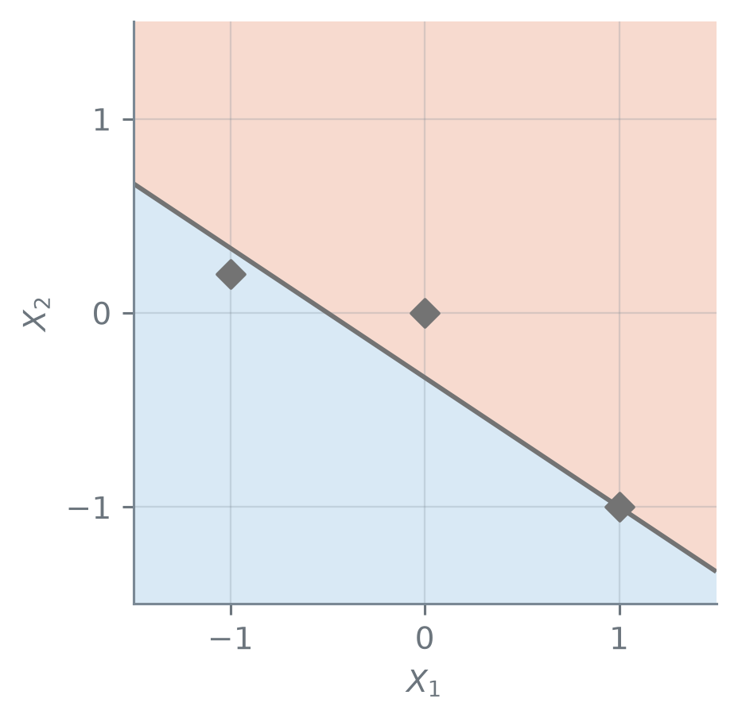
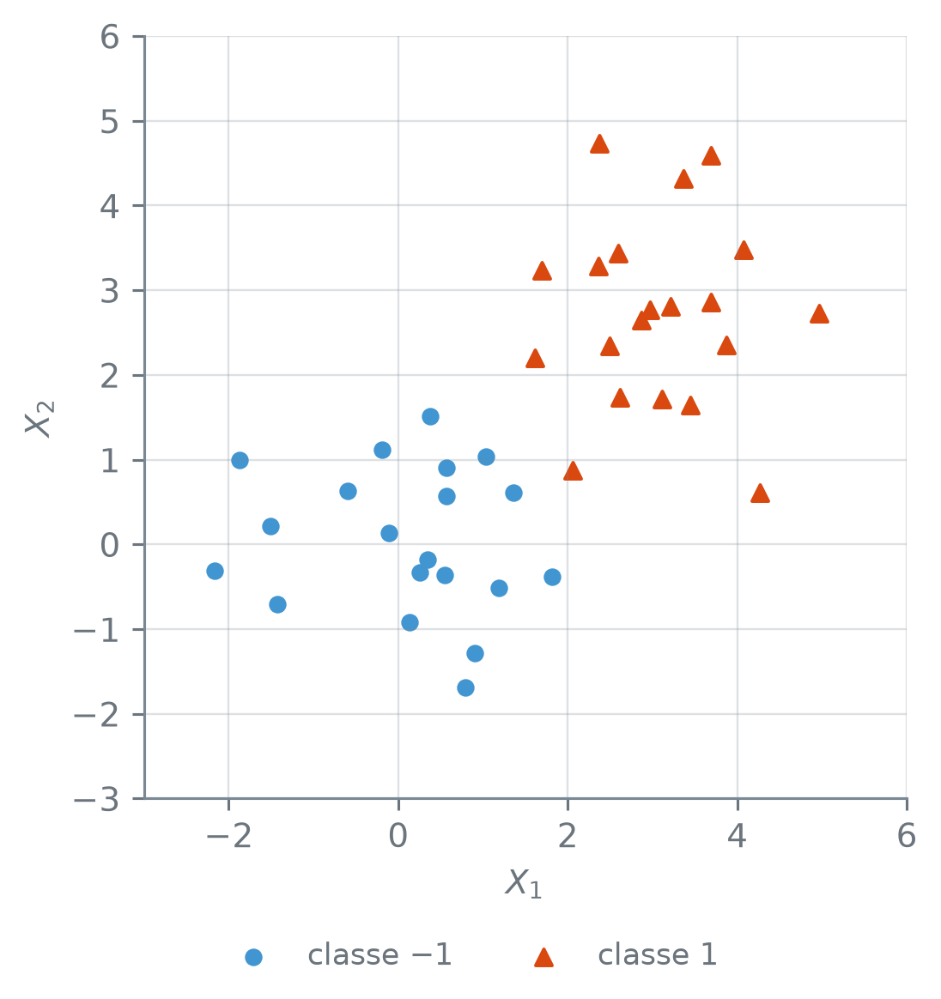
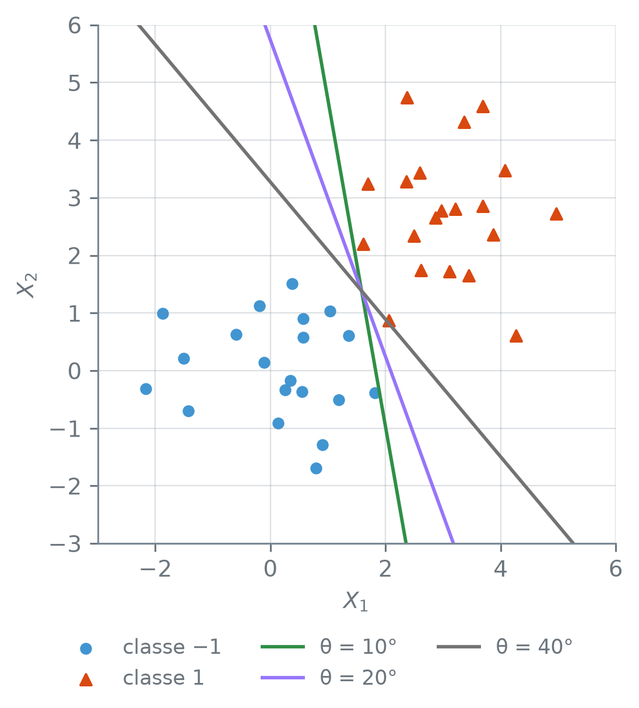
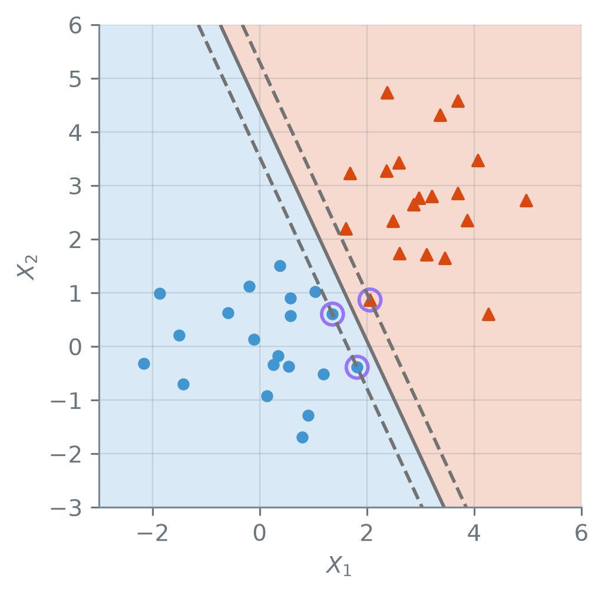
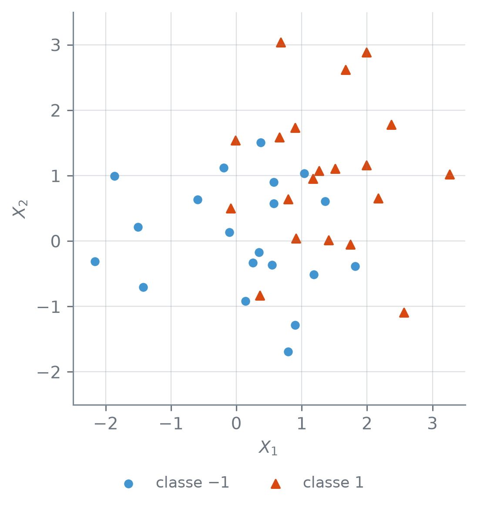

numero_br = lambda v, casas=2: (
f"{v:,.{casas}f}"
.replace(",", "_")
.replace(".", ",")
.replace("_", ".")
.replace("-", "−")
)Hiperplanos e o Classificador de Margem Máxima
Nota
Esta seção corresponde à seção 9.1 de James et al. (2023).
Duas nuvens de pontos no plano, uma de cada classe, que não se tocam: dá para traçar uma reta com uma classe de cada lado. Se uma reta separa, outras também separam, um pouco giradas ou deslocadas. Qual delas escolher? E o que os pontos de treino têm a dizer sobre essa escolha?
Para imprimir com vírgula decimal:
Um hiperplano divide o espaço
No plano, a equação \(\beta_0 + \beta_1 X_1 + \beta_2 X_2 = 0\) descreve uma reta: os pontos \((X_1, X_2)\) que a satisfazem estão sobre ela. Os outros pontos do plano dão à expressão da esquerda um valor positivo ou negativo, conforme o lado da reta em que estão. A mesma ideia vale em qualquer número de dimensões.
Num espaço de \(p\) dimensões, um hiperplano é uma superfície plana de dimensão \(p - 1\), que não precisa passar pela origem: os pontos \(X = (X_1, \dots, X_p)\) que satisfazem
\[ \beta_0 + \beta_1 X_1 + \dots + \beta_p X_p = 0. \]
Com \(p = 2\), é uma reta; com \(p = 3\), um plano. Quando a expressão da esquerda dá um valor positivo, o ponto está de um lado do hiperplano; quando dá negativo, do outro. O hiperplano divide o espaço em duas metades, e o sinal diz em qual delas o ponto está.
A reta \(1 + 2X_1 + 3X_2 = 0\) é um hiperplano com \(p = 2\). O valor da expressão em três pontos diz de que lado da reta cada um está:
import numpy as np
def f(x1, x2):
return 1 + 2 * x1 + 3 * x2
pontos = np.array(
[[0, 0], [1, -1], [-1, 0.2]])
for x1, x2 in pontos:
v = f(x1, x2)
print(numero_br(x1, 1), ";",
numero_br(x2, 1), "→ f =",
numero_br(v, 1))0,0 ; 0,0 → f = 1,0
1,0 ; −1,0 → f = 0,0
−1,0 ; 0,2 → f = −0,4np.array([[0, 0], [1, -1], [-1, 0.2]])— um array de 3 linhas e 2 colunas, um ponto por linha.
O ponto \((0; 0)\) dá 1, e fica do lado positivo. O ponto \((1; -1)\) dá 0: está sobre a reta. O ponto \((-1; 0{,}2)\) dá \(-0{,}4\), e fica do lado negativo. As duas metades do plano, com os três pontos:
import matplotlib.pyplot as plt
g = np.linspace(-1.5, 1.5, 201)
g1, g2 = np.meshgrid(g, g)
z = f(g1, g2)
print("z vai de",
numero_br(z.min(), 1), "a",
numero_br(z.max(), 1))
fig, ax = plt.subplots(
figsize=(3.8, 3.4))
ax.contourf(g1, g2, z,
levels=[-9, 0, 9],
colors=["C0", "C1"],
alpha=0.2)
ax.contour(g1, g2, z,
levels=[0], colors="0.45",
linewidths=1.5)
ax.scatter(pontos[:, 0],
pontos[:, 1], s=40,
color="0.45", marker="D",
zorder=3)
ax.set_xticks([-1, 0, 1])
ax.set_yticks([-1, 0, 1])
ax.set_xlabel("$X_1$")
ax.set_ylabel("$X_2$")
ax.set_aspect("equal")
plt.show()z vai de −6,5 a 8,5
np.linspace(-1.5, 1.5, 201)— 201 valores igualmente espaçados de −1,5 a 1,5.np.meshgrid(g, g)— a malha de todos os pares desses valores:g1guarda a coordenada \(X_1\) de cada nó, eg2, a \(X_2\). Comofsó soma e multiplica,f(g1, g2)calcula a expressão em todos os nós de uma vez.z.min()ez.max()— o menor e o maior valor do array.plt.subplots(figsize=(3.8, 3.4))— cria uma figura,fig, com um gráfico,ax, de 3,8 × 3,4 polegadas.ax.contourf(g1, g2, z, levels, colors, alpha)— pinta a malha pelo valor dez: comlevels=[-9, 0, 9], o que fica entre −9 e 0 recebe a primeira cor, e o que fica entre 0 e 9, a segunda. Os valores dez, de −6,5 a 8,5, cabem entre −9 e 9.alpha=0.2deixa as cores claras.ax.contour(g1, g2, z, levels=[0], ...)— desenha a curva em quezvale 0: aqui, a reta.ax.scatter(x, y, s, color, marker)— um marcador por ponto;marker="D"desenha losangos, ezorder=3os põe por cima das regiões.ax.set_xticks([-1, 0, 1])eax.set_yticks(...)— as marcas de cada eixo.ax.set_xlabel(texto)eax.set_ylabel(texto)— o rótulo do eixo horizontal e o do vertical.ax.set_aspect("equal")— a mesma escala nos dois eixos, para as distâncias e os ângulos saírem sem distorção.plt.show()— mostra a figura.
Com \(p = 3\), o hiperplano é um plano que corta o espaço em dois; com \(p > 3\) não dá mais para desenhar, mas a conta é a mesma: calcular a expressão e olhar o sinal. E \(p > 3\) é o caso comum: com \(p\) preditores, cada observação é um ponto num espaço de \(p\) dimensões, e a fronteira mais simples entre duas classes nesse espaço é um hiperplano.
Classificar pelo lado
Agora os pontos têm classe. São \(n\) observações de treino, cada uma com \(p\) medidas, \(x_i = (x_{i1}, \dots, x_{ip})\), e uma classe \(y_i\), que vale \(-1\) ou \(1\). Com \(f(x) = \beta_0 + \beta_1 x_1 + \dots + \beta_p x_p\), um hiperplano separa as classes quando \(f(x_i) > 0\) para toda observação com \(y_i = 1\) e \(f(x_i) < 0\) para toda observação com \(y_i = -1\).
Um hiperplano separador é um hiperplano que deixa as duas classes em lados opostos. Como \(y_i\) vale \(\pm 1\), as duas condições cabem numa só, que vale para todo \(i = 1, \dots, n\):
\[ y_i\, f(x_i) > 0. \]
O produto é positivo quando o sinal de \(f(x_i)\) coincide com a classe. Uma observação nova \(x^*\) recebe a classe do lado em que cai: \(1\) se \(f(x^*) > 0\), e \(-1\) se \(f(x^*) < 0\).
Os pontos do exemplo são simulados. Cada um tem duas coordenadas sorteadas de uma normal com média 0 e desvio padrão 1; aos da classe \(1\), soma-se 2,7 nas duas coordenadas, o que afasta a nuvem deles da outra. O array X guarda os pontos antes do deslocamento:
rng = np.random.default_rng(16)
X = rng.normal(size=(40, 2))
y = np.repeat([-1, 1], 20)
X_sep = X.copy()
X_sep[y == 1] += 2.7
for c in [-1, 1]:
nuvem = X_sep[y == c]
media = nuvem.mean(axis=0)
rotulo = numero_br(c, 0)
print(f"classe {rotulo}:",
len(nuvem), "pontos")
print(" média:",
numero_br(media[0]), ";",
numero_br(media[1]))classe −1: 20 pontos
média: 0,10 ; 0,05
classe 1: 20 pontos
média: 3,07 ; 2,72np.random.default_rng(16)— um gerador de números aleatórios com a semente 16: toda execução sorteia os mesmos números.rng.normal(size=(40, 2))— 40 linhas e 2 colunas de sorteios da normal com média 0 e desvio padrão 1.np.repeat([-1, 1], 20)— cada valor repetido 20 vezes seguidas: 20 vezes −1, depois 20 vezes 1.X.copy()— uma cópia deX; mudar a cópia não muda o original.X_sep[y == 1] += 2.7—y == 1éTruenas linhas da classe 1, e só essas linhas recebem 2,7 a mais, nas duas colunas.nuvem.mean(axis=0)— a média de cada coluna.
São 20 pontos de cada classe, e a média da classe \(1\) fica acima e à direita da média da classe \(-1\) nas duas coordenadas. As duas nuvens:
def classes(ax, pts, y):
a = pts[y == -1]
b = pts[y == 1]
ax.scatter(a[:, 0], a[:, 1],
color="C0", s=18,
label="classe −1")
ax.scatter(b[:, 0], b[:, 1],
color="C1", s=24,
marker="^",
label="classe 1")
ax.set_xlabel("$X_1$")
ax.set_ylabel("$X_2$")
ax.set_aspect("equal")
fig, ax = plt.subplots(
figsize=(3.8, 4.2),
layout="constrained")
classes(ax, X_sep, y)
ax.set_xlim(-3, 6)
ax.set_ylim(-3, 6)
fig.legend(ncols=2,
loc="outside lower center")
plt.show()
ax.scatter(..., marker="^", label=...)—marker="^"desenha triângulos, elabelé o nome do conjunto na legenda.ax.set_xlim(-3, 6)eax.set_ylim(-3, 6)— os limites do eixo horizontal e do vertical.plt.subplots(..., layout="constrained")efig.legend(ncols=2, loc="outside lower center")— a legenda da figura inteira, em 2 colunas, embaixo e fora da área dos pontos.
Uma reta que separa as nuvens deve passar pela faixa vazia entre elas. Para comparar retas, convém uma família que dependa de um número só. As retas que passam por um ponto fixo \(m\), a média dos 40 pontos, e diferem só pela inclinação escrevem-se assim:
\[ \begin{aligned} f(x) = {} & \cos\theta\,(x_1 - m_1) \\ &+ \operatorname{sen}\theta\,(x_2 - m_2). \end{aligned} \]
O ângulo \(\theta\) gira a reta em torno de \(m\). Aqui \(\beta_1 = \cos\theta\) e \(\beta_2 = \operatorname{sen}\theta\); abrindo os parênteses, \(\beta_0 = -\beta_1 m_1 - \beta_2 m_2\), o valor que faz a reta passar por \(m\). O vetor \(\beta = (\cos\theta, \operatorname{sen}\theta)\) é perpendicular à reta e tem norma, isto é, magnitude, igual a 1: \(\beta_1^2 + \beta_2^2 = 1\).
A expressão \(f(x)\) é o produto escalar de \(x - m\) com \(\beta\), e a seção 4.1 mostrou que, quando um dos vetores tem magnitude 1, o produto escalar é o comprimento da projeção do outro sobre ele. Projetar \(x - m\) na direção perpendicular à reta dá a distância de \(x\) até ela, então \(\lvert f(x)\rvert\) é essa distância.
Com \(\theta = 45^\circ\), \(\cos\theta = \operatorname{sen}\theta = \sqrt{2}/2.\) O ponto \(x = m + (1, 1)\) fica na direção de \(\beta\), a \(\sqrt{1^2 + 1^2} = \sqrt{2} \approx 1{,}41\) de \(m\), e portanto a 1,41 da reta. A conta dá o mesmo:
\[ \begin{aligned} f(x) &= (\sqrt{2}/2)\cdot 1 + (\sqrt{2}/2)\cdot 1 \\ &= \sqrt{2} \approx 1{,}41. \end{aligned} \]
Com \(\beta = (1, 1)\), que descreve a mesma reta mas tem norma \(\sqrt{2}\), a conta dá \(1 + 1 = 2\), e \(f\) deixa de ser a distância.
Com a classe junto, \(y_i f(x_i)\) é a distância com sinal: positiva quando o ponto está do lado da sua classe, negativa quando está do lado errado.
Para três ângulos, o código mostra se a reta separa as classes e qual é a menor das distâncias \(y_i f(x_i)\) entre os 40 pontos:
centro = X_sep.mean(axis=0)
def reta(theta, pts):
t = np.radians(theta)
beta = np.array(
[np.cos(t), np.sin(t)])
return (pts - centro) @ beta
angulos = [10, 20, 40]
print("θ: separa · menor dist.")
for theta in angulos:
dist = y * reta(theta, X_sep)
sep = bool(np.all(dist > 0))
menor = numero_br(dist.min())
print(f"{theta}°:", sep, "·",
menor)θ: separa · menor dist.
10°: True · 0,08
20°: True · 0,27
40°: True · 0,03np.radians(theta)— converte o ângulo de graus para radianos, a unidade denp.cosenp.sin.(pts - centro) @ beta— subtraicentrode cada linha deptse faz, linha a linha, o produto escalar combeta: \(\beta_1 (x_1 - m_1) + \beta_2 (x_2 - m_2)\), um valor por ponto.np.all(dist > 0)—Truequando todos os elementos dedistsão positivos.
As três retas separam as classes, mas a menor distância muda de uma para outra, de 0,03 a 0,27. As três, sobre os pontos:
fig, ax = plt.subplots(
figsize=(3.8, 4.4),
layout="constrained")
classes(ax, X_sep, y)
cores = ["C2", "C3", "0.45"]
for theta, cor in zip(
angulos, cores):
t = np.radians(theta)
passo = np.array(
[-np.sin(t), np.cos(t)])
ax.axline(centro,
centro + passo,
color=cor, lw=1.5,
label=f"θ = {theta}°")
ax.set_xlim(-3, 6)
ax.set_ylim(-3, 6)
fig.legend(ncols=3,
loc="outside lower center")
plt.show()
ax.axline(p1, p2, color, lw)— a reta infinita que passa pelos pontosp1ep2. O vetorpasso, \((-\operatorname{sen}\theta, \cos\theta)\), é perpendicular a \((\cos\theta, \operatorname{sen}\theta)\), entãocentro + passoé outro ponto da reta.
Se a reta passa rente a um ponto de treino, um ponto novo parecido com ele pode cair do outro lado. A distância até a reta também diz algo sobre cada ponto novo: um \(x^*\) a uma distância grande da reta está longe da fronteira; um a uma distância perto de zero está quase sobre ela, e um deslocamento pequeno o passaria para o outro lado.
A margem máxima
Se uma reta separa as classes, há infinitas outras que também separam. Para escolher uma, a medida natural é a que a saída acima já calculou: a menor distância entre a reta e os pontos de treino, a margem. A reta de 20° tem margem 0,27, e a de 40°, 0,03. Qual reta tem a maior margem possível?
O hiperplano de margem máxima é o hiperplano separador mais distante das observações de treino: entre todos os que separam, o de maior margem \(M\). Ele é a solução de
\[ \begin{aligned} &\underset{\beta_0, \dots, \beta_p,\, M}{\text{maximizar}}\ M \\ &\text{sujeito a}\ \sum_{j=1}^{p} \beta_j^2 = 1 \\ &\text{e}\ y_i\, f(x_i) \ge M \\ &\text{para todo } i = 1, \dots, n. \end{aligned} \]
Os coeficientes e \(M\) são escolhidos juntos. A restrição \(\sum_j \beta_j^2 = 1\) impede um atalho: multiplicar todos os \(\beta_j\), e também \(\beta_0\), por 2 descreve o mesmo hiperplano e dobra cada \(y_i f(x_i)\); sem ela, \(M\) cresceria sem limite. Com ela, \(y_i f(x_i)\) é a distância do ponto \(i\) ao hiperplano, com sinal, e a última restrição pede que todos fiquem do lado certo, a uma distância de pelo menos \(M\), desde que \(M > 0\). O classificador de margem máxima atribui a um ponto novo \(x^*\) a classe indicada pelo sinal de \(f(x^*)\) nesse hiperplano.
No scikit-learn, o classificador está no SVC (de support vector classifier, classificador de vetores de suporte), com kernel="linear". O argumento C=np.inf não aceita nenhum ponto de treino do lado errado da margem:
from sklearn.svm import SVC
modelo = SVC(kernel="linear",
C=np.inf)
modelo.fit(X_sep, y)
print("classes_:",
modelo.classes_)
norma = np.linalg.norm(
modelo.coef_[0])
beta = modelo.coef_[0] / norma
b0 = modelo.intercept_[0]
beta0 = b0 / norma
M = 1 / norma
soma = (beta**2).sum()
print("β0:", numero_br(beta0))
print("β1; β2:",
numero_br(beta[0]), ";",
numero_br(beta[1]))
print("soma dos β² = 1:",
bool(np.isclose(soma, 1)))
print("M:", numero_br(M))classes_: [-1 1]
β0: −1,86
β1; β2: 0,91 ; 0,42
soma dos β² = 1: True
M: 0,37SVC(kernel="linear", C=np.inf), do módulosklearn.svm— o classificador por hiperplano. ComC=np.inf, nenhum ponto de treino pode ficar do lado errado da margem: é o classificador de margem máxima, que só existe quando as classes se separam. A seção 16.2 mostra o queCfaz com valores finitos.modelo.fit(X, y)— ajusta o hiperplano aos pontosXcom as classesy.modelo.classes_— as classes, em ordem; \(f > 0\) corresponde à segunda,classes_[1].modelo.coef_— os coeficientes \(\beta_1, \dots, \beta_p\), numa linha (coef_[0]);modelo.intercept_— o \(\beta_0\), emintercept_[0].np.linalg.norm(v)— a norma do vetor, a magnitude da seção 4.1: \(\sqrt{\sum_j v_j^2}\).(beta**2).sum()— eleva cada elemento ao quadrado e soma.np.isclose(a, b)—Truequando os dois números são iguais a menos do arredondamento.
Como \(f > 0\) corresponde a classes_[1], o lado positivo é o da classe \(1\). O SVC guarda coef_ e intercept_ numa outra escala: aquela em que os pontos mais próximos do hiperplano têm \(y_i f(x_i) = 1\). Dividir tudo pela norma de coef_ leva à escala de \(\sum_j \beta_j^2 = 1\), e o \(1\) vira 1 dividido pela norma de coef_, que é \(M\). O hiperplano de margem máxima é \(-1{,}86 + 0{,}91\,X_1 + 0{,}42\,X_2 = 0\), com margem 0,37.
Quantos pontos você espera encontrar exatamente sobre as bordas da margem? Os pontos mais próximos do hiperplano, os que o SVC devolve como vetores de suporte, têm \(y_i f(x_i) = 1\) na escala do SVC e ficam à distância \(M\) na escala de norma 1:
escore = modelo.decision_function(
X_sep)
dist = y * escore / norma
sv = modelo.support_
print("support_:", sv)
print("n_support_:",
modelo.n_support_)
print("ponto, y: y·f · distância")
for i in sv:
yf = y[i] * escore[i]
print(f"{i}, y = {y[i]:d}:"
.replace("-", "−"),
numero_br(yf), "·",
numero_br(dist[i]))
desvio = np.abs(
dist[sv] - M).max()
print("maior desvio de M:",
numero_br(desvio, 4))
na_margem = np.isclose(dist, M,
atol=1e-3)
print("à distância M (±0,001):",
na_margem.sum())
acima = np.all(dist >= M - 1e-3)
print("nenhum mais perto:",
bool(acima))support_: [ 2 19 26]
n_support_: [2 1]
ponto, y: y·f · distância
2, y = −1: 1,00 · 0,37
19, y = −1: 1,00 · 0,37
26, y = 1: 1,00 · 0,37
maior desvio de M: 0,0001
à distância M (±0,001): 3
nenhum mais perto: Truemodelo.decision_function(X)— o valor de \(f(x)\), na escala doSVC, para cada linha deX.modelo.support_— as posições, emX, dos vetores de suporte.modelo.n_support_— quantos vetores de suporte há em cada classe, na ordem declasses_.np.abs(v)— o valor absoluto de cada elemento.np.isclose(dist, M, atol=1e-3)—Trueondedistdifere deMem no máximo 0,001.na_margem.sum()— num array deTrueeFalse, a soma conta osTrue.
Três pontos ficam à distância \(M\): dois da classe \(-1\), os pontos 2 e 19, e um da classe \(1\), o ponto 26. Os três têm \(y_i f(x_i) = 1{,}00\) na escala do SVC, e o maior desvio entre as três distâncias e \(M\), 0,0001, fica bem abaixo da tolerância de 0,001 do isclose. Nenhum ponto fica mais perto do hiperplano. Esses três são os vetores de suporte: vetores porque cada observação é um ponto no espaço de \(p\) dimensões, e de suporte porque o hiperplano se apoia neles.
def regioes(ax, modelo):
g = np.linspace(-3, 6, 181)
g1, g2 = np.meshgrid(g, g)
malha = np.column_stack(
[g1.ravel(), g2.ravel()])
z = modelo.decision_function(
malha).reshape(g1.shape)
lim = np.abs(z).max() + 1
ax.contourf(g1, g2, z,
levels=[-lim, 0, lim],
colors=["C0", "C1"],
alpha=0.2)
estilos = ["--", "-", "--"]
ax.contour(g1, g2, z,
levels=[-1, 0, 1],
colors="0.45",
linewidths=1.5,
linestyles=estilos)
def aneis(ax, modelo):
sv = modelo.support_vectors_
ax.scatter(sv[:, 0], sv[:, 1],
s=90, facecolors="none",
edgecolors="C3",
linewidths=1.5,
label="vetor de suporte")
fig, ax = plt.subplots(
figsize=(3.8, 3.8))
regioes(ax, modelo)
classes(ax, X_sep, y)
aneis(ax, modelo)
ax.set_xlim(-3, 6)
ax.set_ylim(-3, 6)
plt.show()
np.column_stack([a, b])— junta os arrays como colunas; comg1.ravel()eg2.ravel(), que achatam a malha numa fila, cada linha demalhaé um nó \((X_1, X_2)\)..reshape(g1.shape)devolve os valores de \(f\) à forma da malha.ax.contour(..., levels=[-1, 0, 1], linestyles=estilos)— as curvas em que \(f\) vale \(-1\), \(0\) e \(1\) na escala doSVC: o hiperplano, contínuo, e as duas bordas da margem, tracejadas.modelo.support_vectors_— as coordenadas dos vetores de suporte, uma linha por vetor.ax.scatter(..., facecolors="none", edgecolors="C3")— marcadores vazios, só com o contorno roxo: os anéis.
A figura da margem máxima mostra os três vetores de suporte sobre as bordas da margem, e os outros 37 pontos além delas. O código a seguir empurra cada um desses 37, um de cada vez, 3 unidades para longe do hiperplano, na perpendicular, e refaz o ajuste. Antes de ler a saída, um palpite: o hiperplano muda?
fora = [i for i in range(40)
if i not in sv]
iguais = []
for i in fora:
X_mov = X_sep.copy()
X_mov[i] += 3 * y[i] * beta
outro = SVC(kernel="linear",
C=np.inf).fit(X_mov, y)
iguais.append(
np.allclose(outro.coef_,
modelo.coef_)
and np.allclose(
outro.intercept_,
modelo.intercept_))
print("pontos movidos:",
len(fora))
print("iguais em todos:",
all(iguais))pontos movidos: 37
iguais em todos: TrueX_mov[i] += 3 * y[i] * beta— anda 3 unidades na direção perpendicular ao hiperplano, para o lado da classe do ponto, isto é, para longe do hiperplano.SVC(...).fit(X, y)— ofitdevolve o próprio modelo, e o ajuste cabe na mesma linha da criação.np.allclose(a, b)—Truequando todos os elementos dos dois arrays são iguais a menos do arredondamento.
Nos 37 casos, coef_ e intercept_ saem iguais aos do ajuste original: empurrados para fora, um de cada vez, esses pontos não alteram o hiperplano. Quem o define são os vetores de suporte, e um ponto que continua além da borda da margem não muda a solução. Dos 40 pontos de treino, só 3 decidem a fronteira.
Um ponto novo gira a fronteira
Essa dependência de poucos pontos tem um outro lado. Considere um ponto novo da classe \(1\) em \((1{,}2;\ 1{,}2)\), entre as duas nuvens. Antes de ler a saída, um palpite pela equação do hiperplano ou pela figura da margem máxima: de que lado do hiperplano ele cai? O código também o põe no treino e refaz o ajuste:
novo = np.array([[1.2, 1.2]])
f_novo = modelo.decision_function(
novo)[0]
previsto = modelo.predict(novo)[0]
print("previsto:",
numero_br(previsto, 0))
print("distância com sinal:",
numero_br(f_novo / norma))
X_novo = np.vstack([X_sep, novo])
y_novo = np.r_[y, 1]
novo_m = SVC(kernel="linear",
C=np.inf).fit(X_novo, y_novo)
print("support_:",
novo_m.support_)
print("n_support_:",
novo_m.n_support_)
erros = (novo_m.predict(X_novo)
!= y_novo).sum()
print("erros de treino:", erros)
c = novo_m.coef_[0]
M_novo = 1 / np.linalg.norm(c)
print("M novo:",
numero_br(M_novo))
b_novo = c * M_novo
cos = beta @ b_novo
giro = np.degrees(np.arccos(cos))
print("giro:", numero_br(giro, 1),
"graus")previsto: −1
distância com sinal: −0,27
support_: [ 1 40]
n_support_: [1 1]
erros de treino: 0
M novo: 0,12
giro: 21,6 grausmodelo.predict(X)— a classe prevista para cada linha deX:classes_[1]onde \(f > 0\), eclasses_[0]onde \(f < 0\).np.vstack([X_sep, novo])— empilha as linhas: os 40 pontos e o novo embaixo, na posição 40.np.r_[y, 1]—ycom o valor 1 no fim.beta @ b_novo— o produto escalar dos dois vetores de coeficientes, os dois com norma 1: é o cosseno do ângulo entre eles.np.arccosdá o ângulo em radianos, enp.degreeso passa para graus.
O ajuste novo, com o antigo por baixo:
fig, ax = plt.subplots(
figsize=(3.8, 4.9),
layout="constrained")
regioes(ax, novo_m)
classes(ax, X_sep, y)
ax.scatter(1.2, 1.2, s=80,
color="C1", marker="^",
edgecolors="0.45", zorder=3,
label="ponto novo")
aneis(ax, novo_m)
ax.axline((0, -beta0 / beta[1]),
slope=-beta[0] / beta[1],
color="C2", lw=2, ls=":",
label="hiperplano antigo")
ax.plot([], [], color="0.45",
label="hiperplano novo")
ax.plot([], [], color="0.45",
ls="--", label="margem")
ax.set_xlim(-1, 3.5)
ax.set_ylim(-1, 3.5)
ax.set_xticks(range(-1, 4))
ax.set_yticks(range(-1, 4))
fig.legend(ncols=2,
loc="outside lower center")
plt.show()
ax.axline((0, corte), slope=incl)— a reta que passa por \((0, \text{corte})\) com inclinaçãoincl. Do hiperplano antigo, \(\beta_0 + \beta_1 X_1 + \beta_2 X_2 = 0\), sai \(X_2 = -\beta_0/\beta_2 - (\beta_1/\beta_2)\,X_1\).ls=":"desenha a reta pontilhada.ax.plot([], [], ..., label=...)— uma linha sem pontos, que só serve para pôr na legenda o estilo das retas desenhadas porcontour.
O hiperplano antigo põe o ponto novo do lado errado, o da classe \(-1\), a uma distância de 0,27 da reta, embora ele seja da classe \(1\). Com ele no treino, o hiperplano de margem máxima continua sem nenhum erro de treino, mas gira 21,6 graus, e a margem cai de 0,37 para 0,12. O ajuste novo tem dois vetores de suporte, um de cada classe: o ponto 1, da classe \(-1\), e o próprio ponto novo, o 40. Um único ponto girou a fronteira de todo o conjunto.
Quando as classes se misturam
Se as nuvens se misturam, a primeira pergunta deixa de ser a margem: alguma reta ainda separa as classes? Dá para responder sem pressupor a separação, varrendo as direções possíveis da reta, uma a uma, e conferindo se alguma deixa as classes em lados opostos. Antes de usar essa varredura, convém conferi-la num caso em que a resposta é conhecida: o caso separável dos 40 pontos originais, sem o ponto novo, em que o SVC já deu a margem.
A margem 0,37 dá para refazer sem o algoritmo, a partir da direção \(\beta\) do primeiro ajuste. Projetados em \(\beta\), os pontos da classe \(1\) ficam a partir de um valor mínimo, e os da classe \(-1\) até um valor máximo. A diferença entre o mínimo e o máximo é a folga. Se ela é positiva, a reta perpendicular a \(\beta\) no ponto médio da folga separa as classes com margem igual à metade dela; se é negativa ou zero, nenhuma reta perpendicular a \(\beta\) deixa a classe \(1\) do lado para onde \(\beta\) aponta.
def folga(pts, b):
p = pts @ b
return (p[y == 1].min()
- p[y == -1].max())
f_svc = folga(X_sep, beta)
print("folga em β:",
numero_br(f_svc, 3))
igual = abs(f_svc / 2 - M) < 1e-3
print("metade = M (±0,001):",
bool(igual))folga em β: 0,745
metade = M (±0,001): TrueA folga na direção do SVC é 0,745, e a metade dela coincide com a margem \(M\) a menos de 0,001. A conta não depende do SVC: vale para qualquer direção. As três retas testadas antes eram só três, e todas presas ao centro. A varredura testa 720 direções \(\beta = (\cos\theta, \operatorname{sen}\theta)\), de meio em meio grau de 0 a 359,5, cada uma com o seu melhor deslocamento, o ponto médio da folga. As direções opostas, \(\theta\) e \(\theta + 180^\circ\), cobrem os dois lados em que a classe \(1\) pode ficar.
graus = np.arange(0, 360, 0.5)
def folgas(pts):
res = []
for t in np.radians(graus):
b = [np.cos(t), np.sin(t)]
res.append(folga(pts, b))
return np.array(res)
f_sep = folgas(X_sep)
melhor = f_sep.max() / 2
print("direções:", len(graus))
print("maior margem na grade:",
numero_br(melhor))
print("M do SVC:", numero_br(M))
perto = abs(melhor - M) < 1e-3
print("diferença < 0,001:", perto)
a_grade = graus[f_sep.argmax()]
a_svc = np.degrees(
np.arctan2(beta[1], beta[0]))
print("ângulo na grade:",
numero_br(a_grade, 1))
print("ângulo do SVC:",
numero_br(a_svc, 1))direções: 720
maior margem na grade: 0,37
M do SVC: 0,37
diferença < 0,001: True
ângulo na grade: 25,0
ângulo do SVC: 24,9np.arange(0, 360, 0.5)— os valores de 0 a 359,5, de meio em meio grau.f_sep.argmax()— a posição do maior valor do array;graus[...]dá o ângulo dessa posição.np.arctan2(b2, b1)— o ângulo, em radianos, do vetor \((b_1, b_2)\) com o eixo horizontal.
A melhor das 720 direções tem margem 0,37, e a diferença para o \(M\) do SVC fica abaixo de 0,001. O ângulo dela, 25,0°, e o da direção do SVC, 24,9°, diferem em 0,1°, menos que o passo da grade: a varredura chega, por tentativa, à mesma margem e à mesma direção que o SVC acha resolvendo o problema de maximização.
Com \(p = 2\), as direções são os ângulos de um círculo, e varrê-los de meio em meio grau custa 720 contas. Com mais preditores, uma grade igualmente fina precisa de ângulos em \(p - 1\) eixos, e o número de direções cresce de forma explosiva a cada preditor novo. Por isso, na prática, o hiperplano de margem máxima sai da solução do problema de maximização, não de uma varredura.
Os mesmos 40 sorteios, X, com um deslocamento menor, de 1 em vez de 2,7, deixam as duas nuvens se misturarem. A mesma varredura pelas 720 direções diz se alguma reta ainda as separa:
X_mis = X.copy()
X_mis[y == 1] += 1
f_mis = folgas(X_mis)
print("alguma direção separa:",
bool(np.any(f_mis > 0)))
print("maior folga:",
numero_br(f_mis.max()))
mis = SVC(kernel="linear", C=1000)
mis.fit(X_mis, y)
erros = (mis.predict(X_mis)
!= y).sum()
print("erros de treino:", erros,
"de", len(y))alguma direção separa: False
maior folga: −1,51
erros de treino: 9 de 40np.any(f_mis > 0)—Truequando ao menos um elemento é positivo.SVC(kernel="linear", C=1000)— um valor deCfinito e muito grande; o queCfaz vem na seção 16.2.
Nenhuma das 720 direções testadas separa as classes, e mesmo a melhor delas tem folga negativa, de −1,51: em cada uma das 720, as projeções das duas classes se sobrepõem. Com C=np.inf, o ajuste pediria uma separação que a varredura não encontra; com C=1000, ele erra 9 dos 40 pontos de treino. As nuvens misturadas:
fig, ax = plt.subplots(
figsize=(3.8, 4.2),
layout="constrained")
classes(ax, X_mis, y)
ax.set_xlim(-2.5, 3.5)
ax.set_ylim(-2.5, 3.5)
fig.legend(ncols=2,
loc="outside lower center")
plt.show()
Com as classes separadas, quem decide onde o hiperplano de margem máxima passa são os vetores de suporte, três dos 40 pontos; os outros podem se afastar da margem sem mudar nada. A mesma dependência deixa a fronteira frágil: um ponto novo perto dela pode girá-la e estreitar a margem. E quando nenhum hiperplano separa as classes, como indicam as 720 direções testadas em X_mis, o problema da margem máxima não tem solução com \(M > 0\).
James, Gareth, Daniela Witten, Trevor Hastie, Robert Tibshirani, e Jonathan Taylor. 2023. An Introduction to Statistical Learning with Applications in Python. Springer.